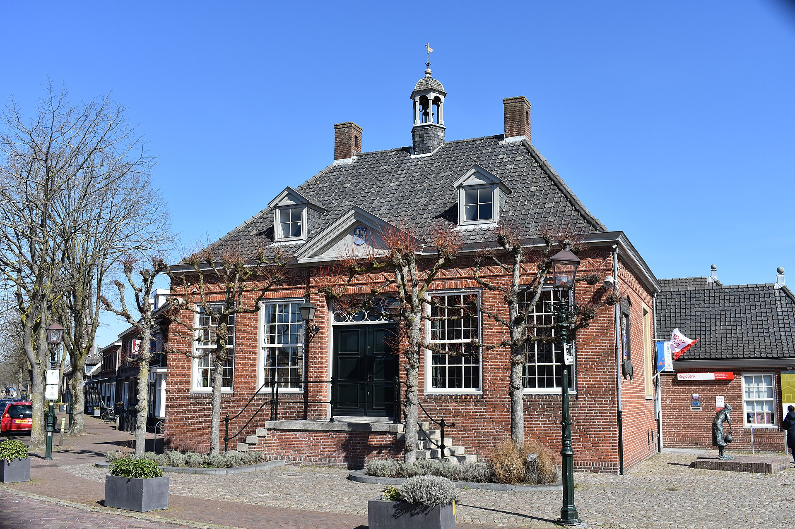
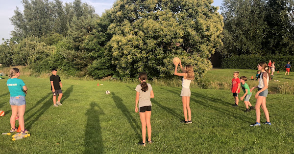
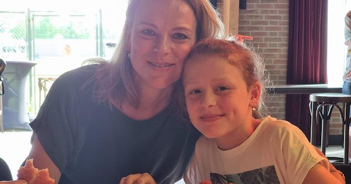

31 OKTOBER 2026Een avondje
griezelen.HALLOWEEN · KERKEIND
griezelen.HALLOWEEN · KERKEIND
IN LIEMPDE, MET ELKAAR.
Bekende gezichten. Nieuwe buren.
En altijd iets om samen te doen.
Dat is Kerkeind.
Al sinds 1970 een buurt om bij te horen.


ZET MAAR IN JE AGENDA
Vrijdag · 18.30–21.00 uur
Zaterdag · 11.30–13.00 uur
Donderdag · 19.30–23.00 uur
Uit onze buurtagenda · bijgewerkt op 18 november 2026. Bekijk de agenda voor de laatste informatie.
WEET JE NOG?
Van de laatste activiteit
tot mooie momenten uit het archief.

UIT HET FOTOARCHIEF
UIT HET FOTOARCHIEFDIT IS KERKEIND
Bij Kerkeind kennen we elkaar. We organiseren activiteiten voor jong en oud, kijken naar elkaar om en denken mee over ons dorp.
Of je hier al jaren woont of net je verhuisdozen uitpakt: maak gerust eens kennis.
EEN GOED IDEE BEGINT MET HALLO
Een vraag, een idee of nieuw in de buurt?
We horen graag van je.